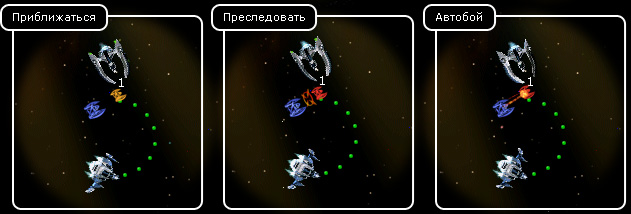

Руководство рейнджера > Экран
космоса > Преследование
|
Руководство рейнджера > Экран
космоса > Преследование
|
| Преследование Существует 3 режима преследования. Чтобы активировать какой-либо из них, надо выполнить следующие операции: 1. Щелкните по кораблю, который вы собираетесь преследовать, один или несколько раз (с небольшим интервалом времени, иначе сработает двойное нажатие, и корабль автоматически двинется в текущем режиме). Щелчки будут последовательно переключать режимы. При первом щелчке будет выбран режим "Приближаться", при втором щелчке - режим "Преследовать", а при третьем - режим "Автобой". 2. Нажмите кнопку "Конец хода". Ваш корабль полетит вслед за другим кораблем в указанном режиме. Каждому режиму соответствует свой курсор. |

Описание режимов: • Приближаться - лететь за выбранным кораблем в качестве сопровождения. • Преследовать - держаться от чужого корабля на расстоянии выстрела. • Автобой - настигнуть противника и сражаться с ним до победного конца. Примечание. Достоинства и недостатки автобоя: Достоинства: • не нужно отдавать приказы каждый ход; • корабль игрока сам летает и воюет. Недостатки: • Игрок не сможет управлять своим кораблем, пока враг не умрет, или пока корабль игрока не получит сильные повреждения, или пока игрок не нажмет "Конец хода". |